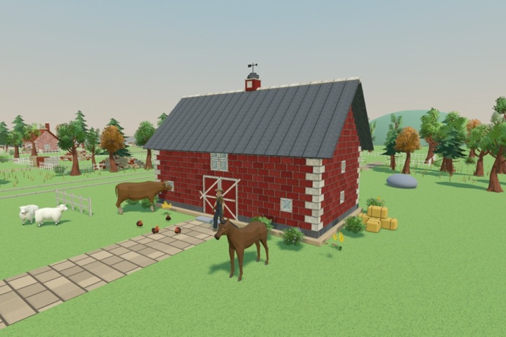
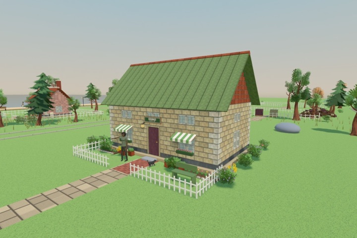
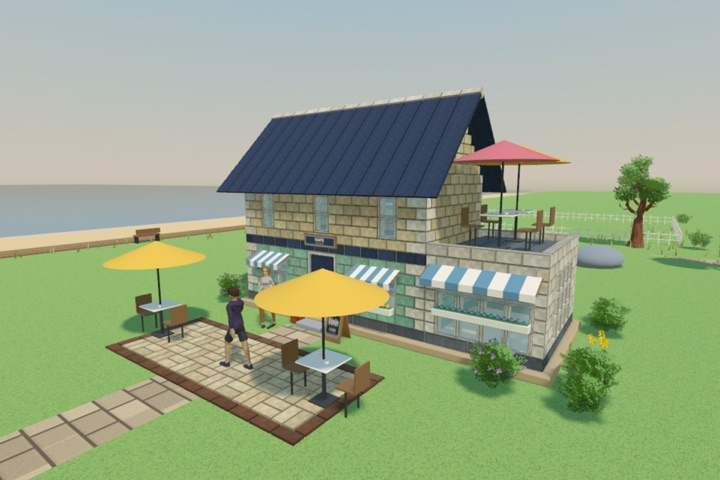
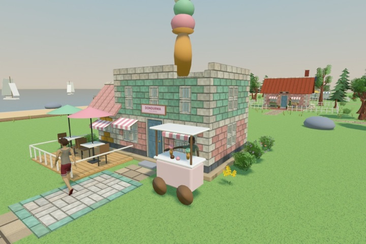
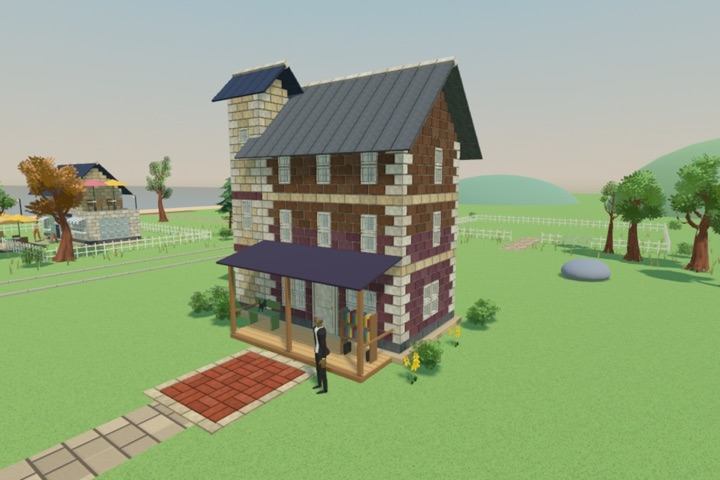
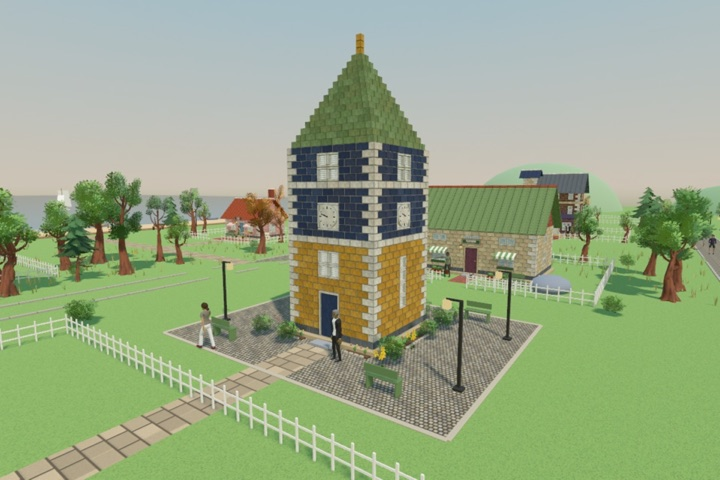
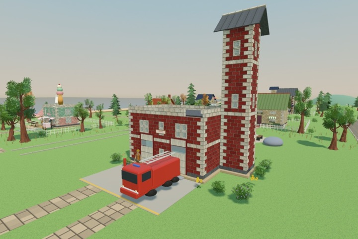
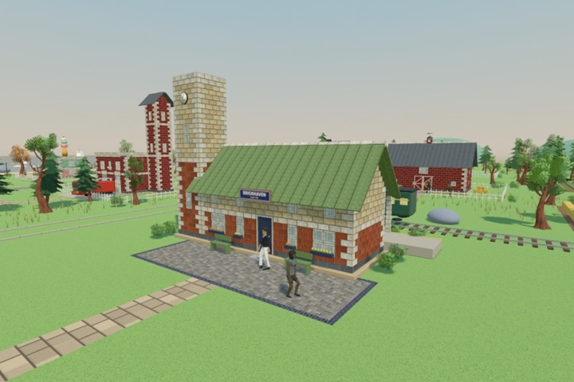

Tuğla tuğla
Yığında doğru şekli ve rengi bul, bir seferde yirmiye kadar taşı, her birini kendin yerine koy.
Bitirilecek bir hikâye
Her bina sahibini geri getirir: Martha'nın fırını, Joe'nun ahırı, Daisy'nin çiçekleri, istasyona kadar.
Kendi tasarımın
Mimar Masası'nda kendi evini, kafeni ya da dükkânını çiz, sonra arsana kur.
Kasabayı süsle
Bank, fener, çiçek tarhı, ağaç, kedi ve tavuk: sokakları kendine göre donat.
Gelişen ustalık
Daha güçlü kollar, daha hızlı eller, daha hızlı asansör, daha yüksek zıplama ve tuğlaları çeken mıknatıs.
Sakin oyun
İnternetsiz, kendi hızında oyna. Zamanlayıcı yok, enerji yok, reklam yok. İlk iki bina ücretsiz; kasabanın geri kalanı tek seferlik satın alma.
Dokuz bina, dokuz hikâye
Her binanın sahibi geri dönmeyi bekliyor.








Destek
Bir hata, bir fikir ya da bir soru mu var? hyapps@outlook.com adresine yaz. Her mesajı okuyoruz.
Brickhaven ücretsiz mi?
İlk iki bina, Fırın ve Kırmızı Ahır ücretsiz. Tüm Kasaba tek seferlik bir satın almadır; diğer bütün binaları, Mimar Masası'nı ve Süsle'yi açar. Abonelik ve reklam yok.
İnternet gerekiyor mu?
Hayır. Brickhaven tamamen internetsiz oynanır. Satın alma, iCloud eşitlemesi ve Game Center internet olduğunda onu kullanır.
Kasabam yeni telefonuma ya da iPad'ime geçer mi?
Evet. Kayıtların kendi iCloud'unda tutulur; aynı Apple Hesabı ile girince seninle gelir.
Başka bir cihazda satın aldım, nasıl geri alırım?
Satın alma ekranını aç ve Geri yükle'ye dokun. Satın almalar Aile Paylaşımı grubunla da paylaşılır.
Renk körleri için bir mod var mı?
Evet: Ayarlar → Renk körü modu her tuğla rengine küçük bir simge basar; renkler yalnız renkle değil, şekille de ayrılır.